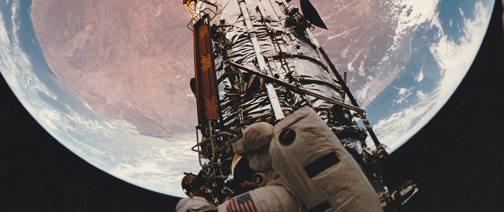

4.0 Thinking Ahead
4.0 Thinking Ahead

Figure 4.1. As captured with a fish-eye lens aboard the Atlantis Space Shuttle on December 9, 1993, Earth hangs above the Hubble Space Telescope as it is repaired. The reddish continent is Australia, its size and shape distorted by the special lens. Because the seasons in the Southern Hemisphere are opposite those in the Northern Hemisphere, it is summer in Australia on this December day. (credit: modification of work by NASA)
If Earth’s orbit is nearly a perfect circle (as we saw in earlier chapters), why is it hotter in summer and colder in winter in many places around the globe? And why are the seasons in Australia or Peru the opposite of those in the United States or Europe?
The story is told that Galileo, as he left the Hall of the Inquisition following his retraction of the doctrine that Earth rotates and revolves about the Sun, said under his breath, “But nevertheless it moves.” Historians are not sure whether the story is true, but certainly Galileo knew that Earth was in motion, whatever church authorities said.
It is the motions of Earth that produce the seasons and give us our measures of time and date. The Moon’s motions around us provide the concept of the month and the cycle of lunar phases. In this chapter we examine some of the basic phenomena of our everyday world in their astronomical context.
Source: Andrew Fraknoi, David Morrison, Sidney C. Wolff Astronomy 2e, OpenStax, 2022. Licensed under CC BY-NC-SA 4.0. Converted to Markdown; text unchanged, interactive embeds omitted.